تاریخچه، پیشرفتها و کاربردهای هوش مصنوعی در شبکه و تجهیزات شبکه
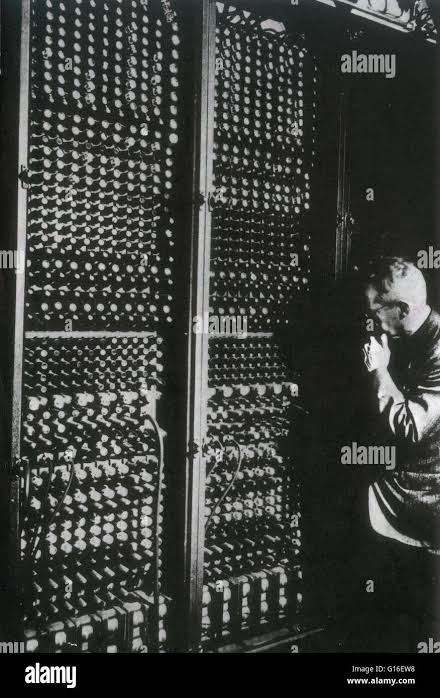
از پیشگامان علوم رایانه و مطرحکننده پرسشهای بنیادی درباره هوشمندی ماشینها.
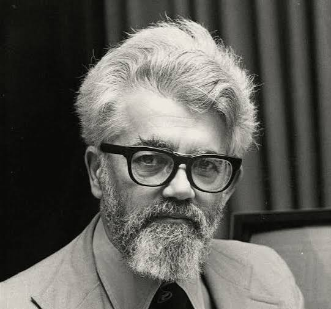
از افرادی که اصطلاح Artificial Intelligence را در شکلگیری رسمی این حوزه مطرح کرد.
از پژوهشگران تأثیرگذار در سالهای اولیه شکلگیری هوش مصنوعی.
از پیشگامان یادگیری ماشین که روی برنامههای بازی چکرز کار کرد.
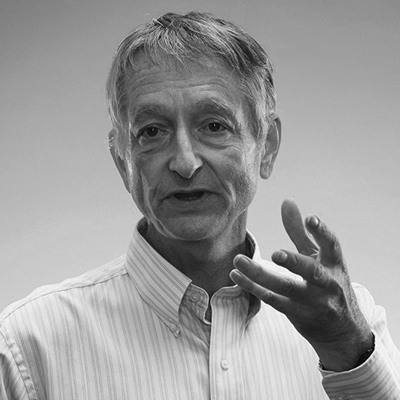
از پژوهشگران تأثیرگذار در توسعه یادگیری عمیق و شبکههای عصبی مدرن.
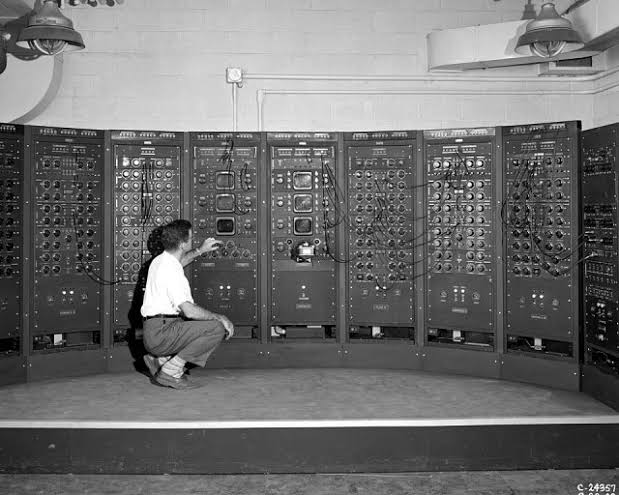
برنامههای اولیه برای حل مسئله، استدلال و بازیهای رایانهای.
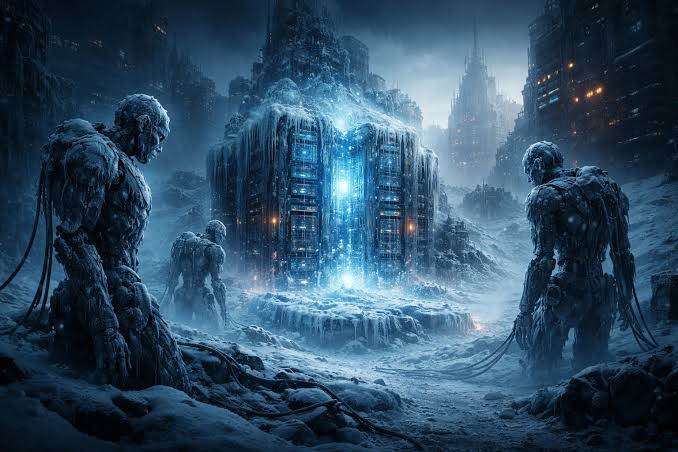
محدودیت قدرت محاسباتی، داده و روشها؛ کاهش حمایت مالی.
برنامههایی که از قواعد و دانش تخصصی استفاده میکردند.
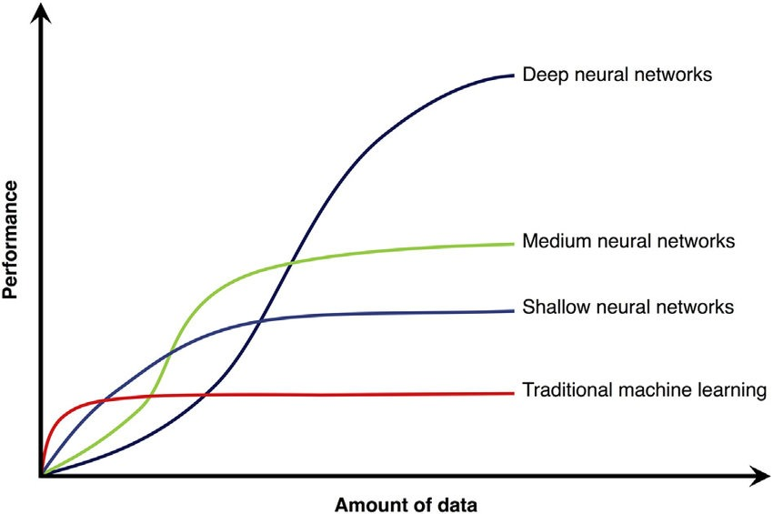
پیشرفت یادگیری ماشین و دسترسی به دادههای بیشتر.
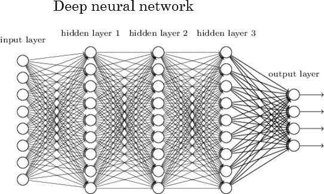
موفقیت شبکههای عصبی عمیق در تشخیص تصویر، گفتار و پردازش زبان.
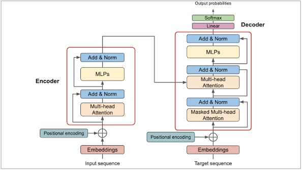
مقاله «Attention Is All You Need» که به توسعه مدلهای زبانی مدرن کمک کرد.
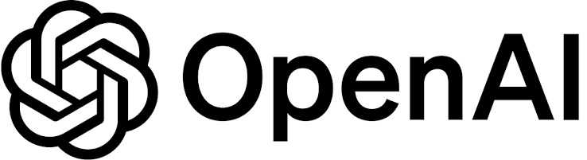
معرفی عمومی ChatGPT در نوامبر ۲۰۲۲ و افزایش توجه عمومی.
رایانهها و پردازندههای گرافیکی قدرتمندتر شدند و آموزش مدلهای بزرگ عملیتر شد.
گسترش اینترنت، وبسایتها، تصاویر، ویدئوها و متنهای دیجیتال، داده بیشتری فراهم کرد.
یادگیری عمیق و معماری ترنسفورمر، توانایی مدلها در پردازش داده و زبان را افزایش دادند.
کاربران بدون دانش برنامهنویسی تخصصی، با پرسشهای معمولی به ابزارها دسترسی پیدا کردند.
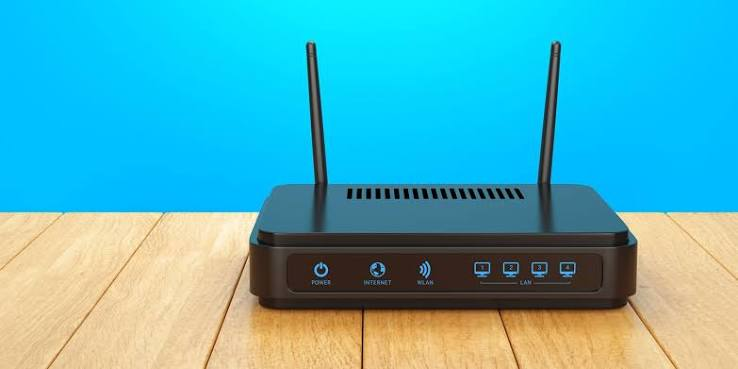
هدایت بستههای داده بین شبکهها
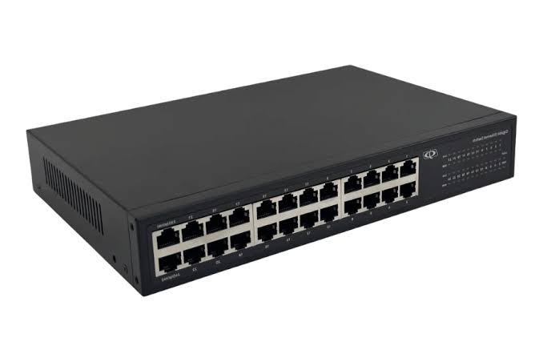
انتقال فریمها در شبکه محلی
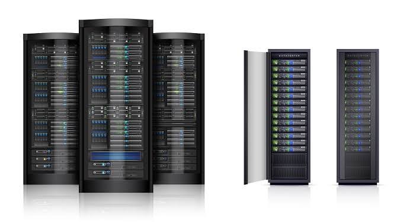
ارائه سرویس و منابع
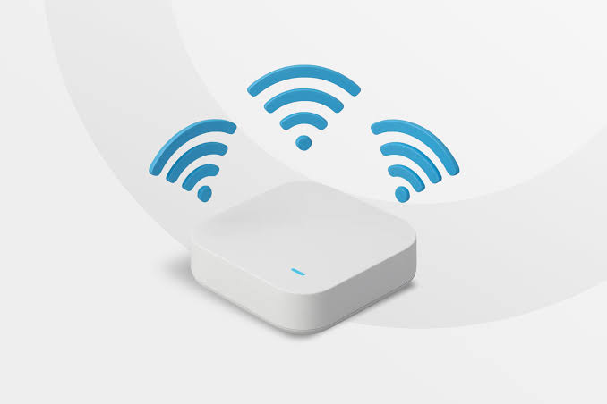
فراهم کردن اتصال بیسیم
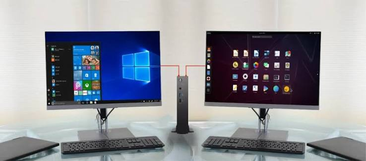
استفادهکننده از خدمات شبکه
مثال آموزشی: در یک مدرسه، کاربران از کند شدن شبکه شکایت دارند. سامانه نظارتی افزایش ترافیک و بالا رفتن تأخیر را تشخیص میدهد. ابزار تحلیل، این اطلاعات را به مدیر شبکه ارائه میکند تا با بررسی سوئیچ، روتر، لینک ارتباطی و تنظیمات، علت واقعی را مشخص کند.
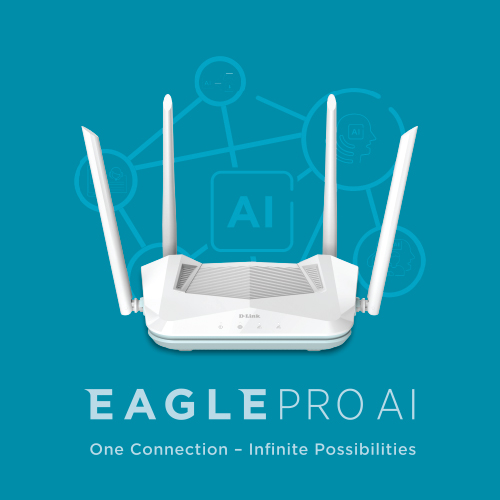
تحلیل ترافیک و وضعیت عملکرد در سامانههای مدیریت سازگار.
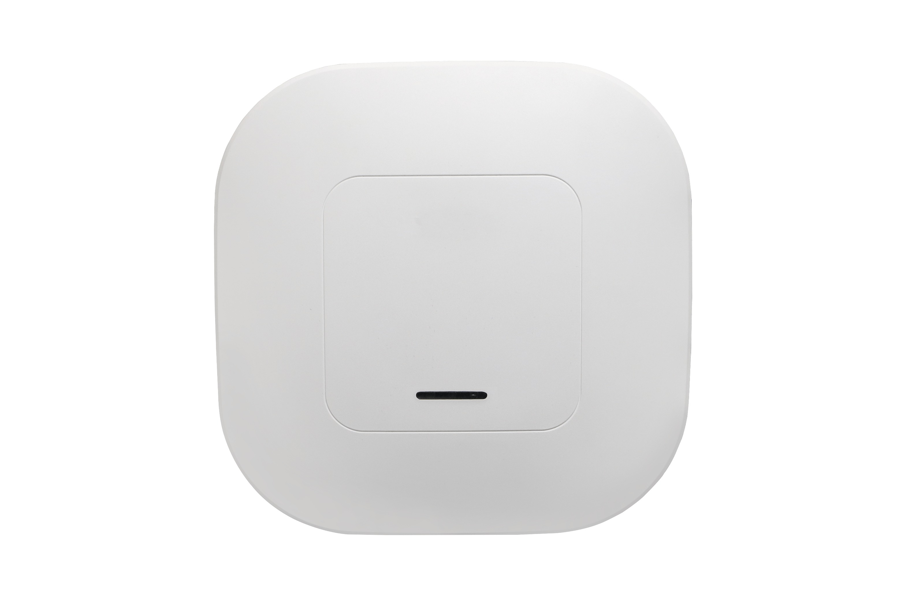
کمک به مدیریت شبکه بیسیم و تحلیل وضعیت اتصال در محصولات پشتیبانیشده.
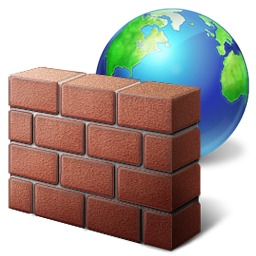
کمک به تحلیل رخدادهای امنیتی و شناسایی الگوهای مشکوک.
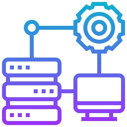
اجرای ابزارهای پایش، تحلیل داده و ارائه پیشنهاد برای عیبیابی.
پایش هوشمند تجهیزات و کمک به بهینهسازی مصرف انرژی و منابع.
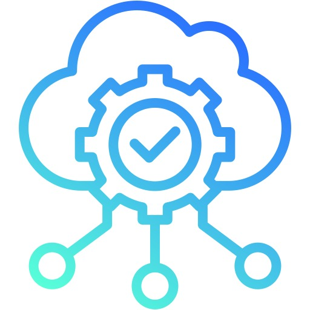
پردازش تحلیلها میتواند روی سرویس ابری نیز انجام شود.
هوش مصنوعی نتیجه چندین دهه پژوهش است؛ ریشههای رسمی آن به دهه ۱۹۵۰ بازمیگردد.
قدرت پردازش، دادههای بیشتر، پیشرفت الگوریتمها و دسترسی آسان، موجب گسترش کاربرد آن در سالهای اخیر شدند.
هوش مصنوعی میتواند در مدیریت، امنیت، عیبیابی و بهینهسازی شبکه کمک کند؛ اما به داده مناسب، طراحی صحیح و نظارت متخصص نیاز دارد.